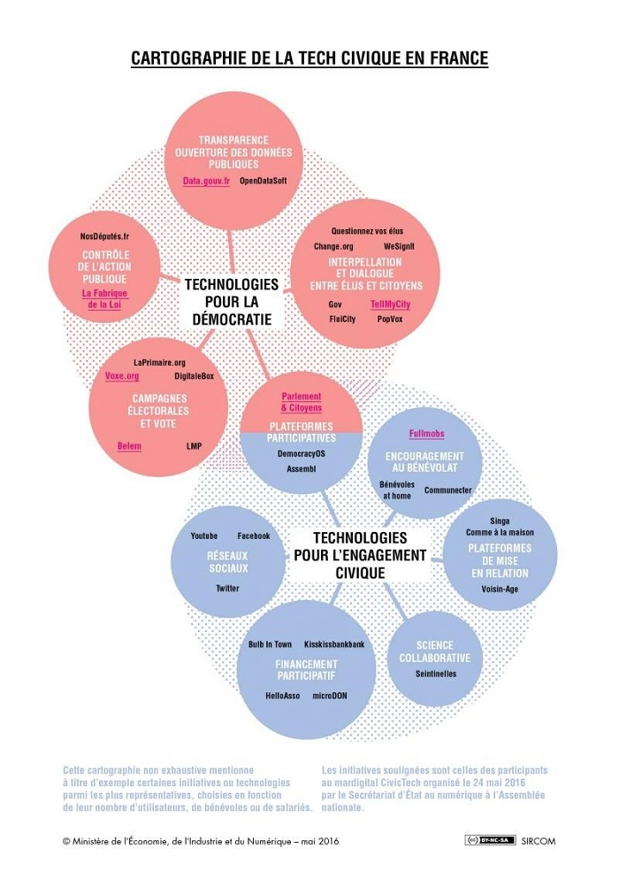

Après la musique, les transports, la presse, la politique sera peut-être le prochain secteur bousculé par les nouvelles technologies, voici les civic-tech. Ces start-ups créées grâce à des initiatives citoyennes, se multiplient et deviennent nombreuses, complémentaires et stimulantes. Pour les citoyens, la vie politique ne peut plus fonctionner au 21ème siècle, siècle de l’Internet, des plateformes (espace de travail à partir duquel on peut échanger, collaborer), et de l’économie collaborative, comme elle fonctionnait au 19ème siècle, d’où la nécessité d’une nouvelle approche.
La civic-tech (abréviation de civique technologie), est définie comme étant l’usage de la technologie dans le but de renforcer le lien démocratique entre les citoyens et le gouvernement. L’une des premières initiatives en France dans ce domaine, est la création d’une association ICI (Innovons pour la Concertation sur Internet) en 2010 qui ambitionne la mise en ligne d’une plateforme de débats citoyens, participons.fr.
Le concept de la civiv-tech, s’intéresse et englobe plusieurs champs qui concernent directement les citoyens. La civic-tech englobe toutes les initiatives publiques, associatives ou privées qui concourent à renforcer l’engagement citoyen, la participation démocratique et la transparence des gouvernements. Cette approche permet de fédérer tous les projets qui utilisent le numérique pour l’émancipation des individus, l’organisation de campagnes et la décision collective dès lors qu’elles intègrent une dimension politique et ont un impact sur la sphère publique.
Pour illustrer cette approche, une cartographie de la civic-tech (figure ci-après) en France a été adoptée par le secrétariat d’état au Numérique. Elle distingue les technologies pour la démocratie et/ou pour l’engagement citoyen.
Avec l’accélération de développent de numérique, les civic-tech, ont pris encore plus d’intérêt. Ainsi, lors du sommet mondial du partenariat pour un gouvernement ouvert, qui s’est tenu à Paris du 7 au 8 Décembre 2016, un incubateur français dédié à la civic-tech, a été lancé par le collectif Démocratie ouverte. Une structure où les civic- tech pourront bénéficier de conseils d’experts, grandir et, in fine, toucher un plus large public. Puis en parallèle, faire émerger de nouveaux outils numériques capables de mieux impliquer les citoyens dans la vie démocratique.
De son côté, le journal Lemonde.fr, dans un récent article, aborde les civic-tech avec une autre appellation : « la démocratie en version start-up ». Différentes plateformes et start-up, qui sont déjà en œuvre ont été citées. Elles concernent différentes catégories de citoyens : actifs, chômeurs, défenseurs des droits de l’homme. On trouve par exemple des chaînes vidéo spécialisées dans les actualités politiques, ou encore une start-up dédiée aux élections législatives de Juin 2017.
Dans le même numéro du journal Lemonde.fr, on relève une autre approche, considérant que la modernisation du service public, passe par le concept désigné par « GOV TECH » qui permet de court-circuiter les partis et les élus traditionnels.
A cette impression de liberté que procure le numérique aux jeunes et moins jeunes, s’ajoute l’impression d’avoir un impact politique et social sans avoir à passer par les partis, comme le souligne Mohamed Adnène Trojette de Sciences Po Paris6. En conférant aux citoyens de nouveaux modes d'expression, les nouveaux outils numériques bouleversent les règles du jeu et promettent l'avènement d'une "démocratie augmentée" (à défaut de dire démocratie réparée).
Cependant, il faut savoir qu’en parallèles, les partis politiques essaient de tirer profit de cette révolution numérique, notamment pour cibler leurs électeurs. Grâce notamment au Big Data, tous les politiciens de gauche ou de droite, essaient d’exploiter le maximum de données récupérées sur différents réseaux pour convaincre et augmenter le nombre de voix en leur faveur.
Qu’en est-il concrètement sur le terrain ? Le journal lexpress rapporte, que le collectif « Ma voix », a fait son galop d’essai lors des élections partielles à Strasbourg au mois de Mai. Son candidat a récolté 4,25% des voix, il a fait plus que le candidat du PCF (3,83%), ce qui a été jugé encourageant. Rappelons que « #Ma voix » est une expérimentation démocratique à l’occasion des législatives de Juin 2017, dont l’objectif est d’élire des citoyens volontaires issue de la société civile à l’assemblé nationale.
Dans un article de Sophie Fay, publié par le journal Le nouvel Obs, elle cite trois exemples de civic-tech, qu’elle juge complémentaires et stimulantes. D’abord l’association LaPrimaire.org qui veut permettre aux internautes de choisir leur candidat à la présidentielle. La problématique est la suivante : Les partis représentent moins de 1% de la population, mais ils ont malgré cela tous les pouvoirs : ils désignent les candidats et monopolisent la scène médiatique. « C’est cela que nous voulons changer ». Se pose alors la question du ‘Comment’ ? Surtout pas en créant un autre parti, mais en déverrouillant les primaires, en imaginant un processus de sélection des candidats plus légitimes que celui organisé par les partis politiques : "une primaire démocratique qui permettrait à chaque citoyen de se présenter comme candidat à l’élection présidentielle de 2017 ou de proposer des candidats à la dite « élection », expliquent les deux meneurs de projet David Guez et Thibauld Favre. En deuxième exemple, la journaliste cite Voxe.org qui s’intéresse aux programmes électoraux. Le principe de la start-up, Voxe.org, dirigée par Léonor de Roquefeuil, est de mettre à disposition des citoyens une plateforme de comparaison des programmes électoraux. A priori, cette initiative est bien accueillie, puisqu’elle a même été soutenue par le ministère des affaires étrangères. Le concept semble aussi adopté par plusieurs pays qui l’ont utilisé lors des élections, et trouve également des applications dans des manifestations internationales, comme la COP 21. Enfin, en troisième exemple, la journaliste cite l’association MaVoix qui ambitionne d’organiser la démocratie directe, en donnant aux électeurs un contrôle sur le vote de leur député. Emmené par Quitterie de Villepin, une passionnée de la politique, ancienne militante du Modem, mais déçue par la politique traditionnelle, ce mouvement a pour mot d’ordre aujourd’hui : « Hacker l’Assemblée », c'est-à-dire prendre le contrôle des députés. En clair, elle milite pour un modèle de démocratie directe. Pour ce faire, elle préconise, une autre manière d’influencer le débat. Pourquoi ne pas former un groupe assez puissant pour porter au Parlement une quinzaine de députés qui ne voteraient pas en suivant la ligne d’un parti, mais en suivant les consignes que leur donneraient leurs électeurs via une plateforme de vote ?
Cette approche de la civic-tech, serait plutôt réalisable à l’échelle locale. Effectivement, la performance des civic-tech, est palpable au niveau des communes. Des cas concrets de bon fonctionnement sont à relever dans les communes de Nanterre, à Vernon en Normandie. Pour les politiques, les citoyens n’attendent plus les échéances électorales pour les reconduire ou les sanctionner, mais ils sont interpellés au jour le jour, une nouvelle étape pour la démocratie et un vrai challenge pour les partis politiques.
Mais alors, que pensent les politiques eux-mêmes de la civitech ? Voici l’étude d’un cas tout récent, les présidentielles françaises. Un seul candidat a été très en avant sur ce thème : le président de mouvement de la France insoumise Jean-luc Mélenchon, qui a déclaré : « Il nous faut changer de régime institutionnel, rendre le peuple souverain et favoriser une réelle participation citoyenne notamment via les Civic-Tech ». Pour Nicolas Dupont-Aignan président du Mouvement Debout la France, est plus réservé, il déclare : « bien sûr, il faut se parler, échanger et s’interpeller grâce à la technologie. Mais il ne faut jamais oublier que nous sommes des êtres humains, sociaux, et que nous avons besoin de nous voir. Rien ne pourra jamais se substituer à un regard qui vous dit merci ».
Cependant, si en France la technologie permet un rapport plus direct et horizontal entre les citoyens et leurs représentants politiques, actuellement elle rencontre encore des difficultés de mise en application. Notamment à cause de la fracture numérique qui touche encore un bien trop grand nombre de citoyens. Elle peut être sociale, générationnelle ou territoriale.
Un autre champ de développement de la civic-tech est la lutte contre un fléau qui ronge la politique et les politiciens en général, et qui pourrait être combattu par la civic-tech, il s’agit de la corruption. Dans son édition du 17-2-17, le journal rfi.fr, s’intéresse au sujet sous le titre : « Civictech », la lutte contre la corruption à l’heure d’internet.
A titre d’exemple, en France, l’association Transparency International a mis en place un outil qui permet de mieux identifier les activités susceptibles de générer des conflits d’intérêts des parlementaires français. Un état des lieux cartographié des affaires de corruption en France, par l'ONG Transparency International, a été publié.
Cartographie des affaires de corruption en France, par l'ONG Transparency International